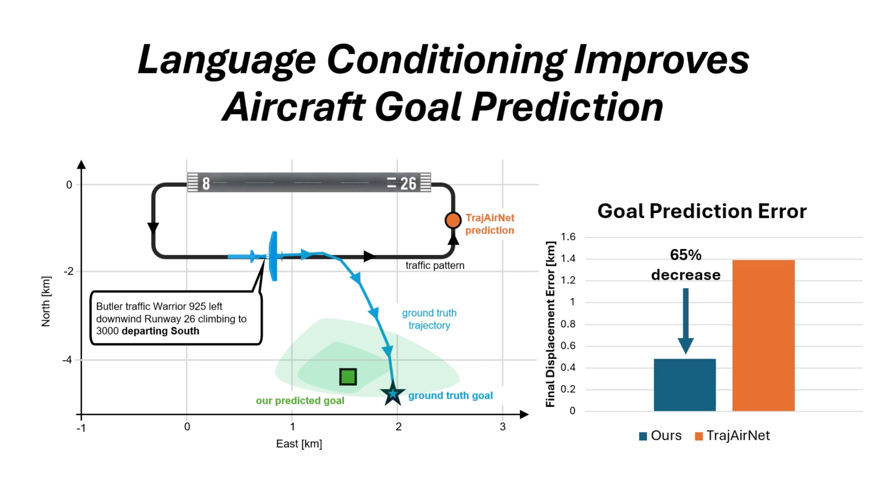
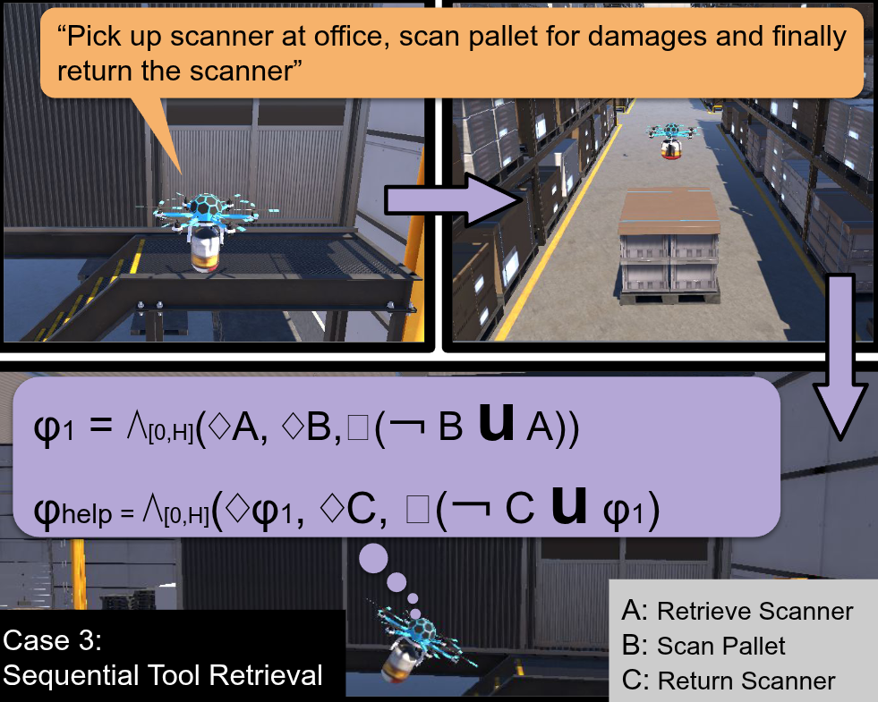

|
Sundhar Vinodh Sangeetha
I'm a graduate student at Georgia Tech interested in robots that interact closely with humans in
safety-critical settings,
which I'm working on at the Safe Robotics Lab
and C3U Lab, advised by Shreyas Kousik and Sarah Li.
In the past, I have
- Developed LIDAR mapping and path planning software for quadrotors at Purdue UAS Research and Test Facility
- Verified aircraft control systems using model-based simulations at Gulfstream
- Created models and control algorithms for fluid systems (BE4 rocket engine, New Glenn ground
systems) at Blue Origin
In my free time, I like to learn about baseball statistics and read sci-fi.
Please feel free to email me at ssangeetha3 at gatech dot edu
Scholar /
GitHub /
LinkedIn
|
|
|

|
Language Conditioning Improves Aircraft Goal Prediction in Untowered
Airspace
Sundhar Vinodh Sangeetha,
Chih-Yuan Chiu,
Sarah H.Q. Li*,
Shreyas Kousik*
(*: Equal Advising)
Submitted to ICRA, 2026
project video /
arXiv
At 90% of airports in the US, pilots talk directly to one another to coordinate, without air traffic control.
Using these loosely structured natural language communications to infer spatial goals reduces error by up to 65%.
|
|

|
Ask, Reason, Assist: Decentralized Robot Collaboration via Language and
Logic
Dan B.W. Choe,
Sundhar Vinodh Sangeetha,
Steven Emanuel,
Chih-Yuan Chiu,
Samuel Coogan,
Shreyas Kousik
Submitted to RA-L
project page /
arXiv
Enabling warehouse robots to coordinate in natural language and turning this into temporal logic constraints for motion planning allows them to resolve problems autonomously while minimizing disruption to the overall multi-agent system.
|
|